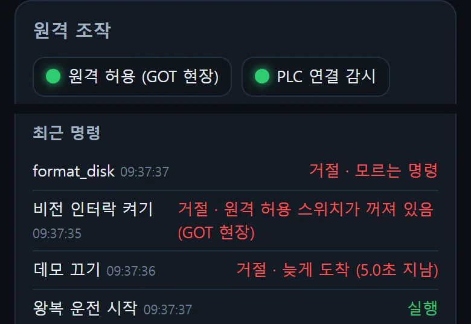

01
자동화 부품 무역·조달
필요한 부품을, 필요한 때에.
- 미쓰비시 PLC·서보·인버터·GOT(HMI)·센서 공급
- 해외 소싱 및 수입 대행, 국내 부품의 해외 수출
- 단종 부품 대체 모델 제안과 호환 확인
- 네이버 스마트스토어 상시 판매
사업 분야
부품을 고르는 사람과 프로그램을 짜는 사람이 같으면, 호환·배선·설정 문제가 미리 걸러집니다.
필요한 부품을, 필요한 때에.
PLC부터 화면, 서보, 통신까지.
현장에 맞춘 자체 개발 도구.
GEN SYSTEM은 자동화 설비 유지보수 실무와 무역 회사에서 쌓은 글로벌 소싱·수출입 경험을 바탕으로 출발했습니다. 단순 판매가 아니라, 설비에 맞는 부품과 그 부품을 움직이는 프로그램까지 함께 제안합니다.
기술 사례
각 사례는 과제 → 만든 것 → 결과 순서로 정리했습니다. 화면과 도면은 모두 자체 시험 장비·가상 설비 자료입니다.
Wiring Studio

Remote Monitor
결과 조건이 맞지 않으면 PLC가 실행하지 않고, 거절 이유를 화면에 남깁니다.
Vision Guard
보조 기능이며 안전장치(안전 인증 장치)가 아닙니다. 라이트 커튼·안전 릴레이 등 인증된 안전장치를 대신하지 않습니다.
Servo Tuning
MR Configurator2를 자동으로 조작해 원터치 튜닝, 파라미터 백업(되돌리기용), A4 보고서를 한 번에 처리합니다. 인터넷이 없는 현장 노트북에서도 실행됩니다.
GOT HMI
한국어·English·Tiếng Việt를 버튼 하나로 전환. 운전·JOG·단계 운전·알람 화면을 같은 구조로 만듭니다.
Serial
E5CC 온도 조절기를 PLC 시리얼 통신 모듈로 연결해 현재값·설정값을 읽고 쓰고, 센서·통신 이상을 화면에 표시합니다.
Desktop App
지점 업무를 관리하는 데스크톱 ERP 프로그램을 개발했습니다. 현장 PC에 맞춘 가벼운 구성입니다.
2차전지 · 제조 라인 대응
공정과 설비가 많은 2차전지·제조 현장에서 반복되는 일 — 설비 데이터 확인, 도면 정리, 부품 조달 — 을 작은 팀의 속도로 처리합니다.
PLC 데이터를 Ethernet(MC 프로토콜)으로 모아 상태·알람·추이를 PC와 휴대폰에서 확인합니다.
공급사마다 다른 BOM을 하나의 형식으로 정리하고, 도면·전선 목록·마킹 자료와 다국어 HMI를 같은 규칙으로 만듭니다.
미쓰비시 계열 부품을 국내외에서 빠르게 찾고, 단종 품목은 대체 모델과 배선·파라미터 호환까지 확인해 제안합니다.